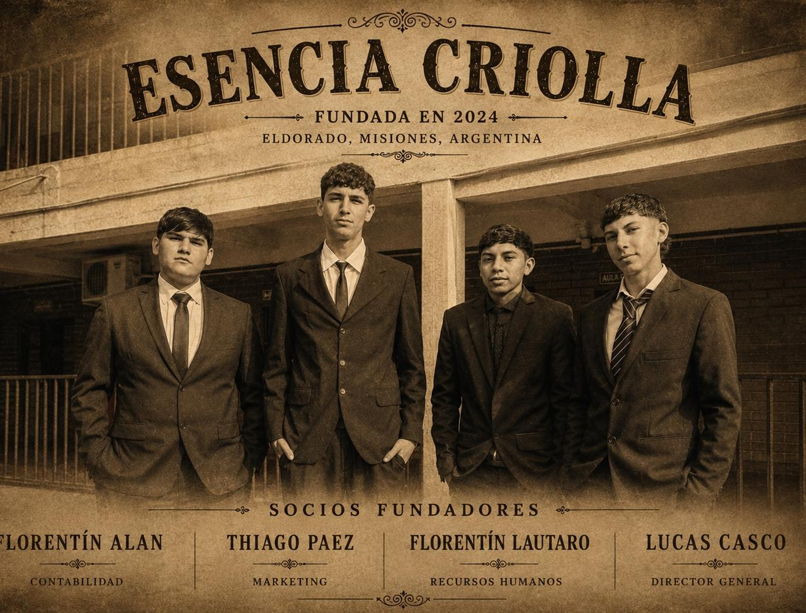

De Misiones para Misiones:
Fuego, Pasión y Tradición
De una charla con hambre después del colegio a crear el sándwich de vacío desmechado con auténtica identidad misionera.

Los cuatro socios fundadores de traje en el patio donde se gestó la hermandad y la receta que hoy enciende el fuego en Eldorado.
Todo arrancó como arrancan las mejores ideas en Misiones: después del colegio, con hambre y sin plata.
Sentados en la vereda de la escuela, entre cuadernos y mochilas pesadas, soñábamos con una comida que representara de verdad lo que somos: el humo de las brasas, el disco al rojo vivo y la generosidad de la mesa familiar misionera.
No queríamos comida rápida genérica ni ultraprocesados sin alma. Queríamos vacío vacuno de primera, braseado pacientemente durante más de cinco horas con caldo de hierbas silvestres hasta quedar tan tierno que se deshace con una cuchara de madera.
Cocción a Disco y Leña
Carne desmechada al fuego vivo en disco de campo curtido con grasa vacuna y especias criollas.
Chimi Casero & Criolla
Pimiento rojo, cebolla morada, orégano de huerta y vinagre de alcohol macerado por 48 horas.
El Secreto del Sándwich
Pan con el tamaño perfecto & Costra Dorada
Elaborado por panaderos locales para absorber los jugos de cocción sin perder estructura crujiente.
Vacío Desmechado Misionero
Hebras jugosas tiernizadas a fuego muy lento con reducción de vino y aromáticas locales.
Queso Barra Misionero Fundido
Queso criollo de cuenca lechera provincial, derretido al vapor del disco antes de montar.
Salsas Criolla y Chimichurri
Equilibrio perfecto de acidez, frescura y picor suave para acompañar cada bocado.
Los 4 Compañeros Detrás del Fogón
Una amistad forjada en las aulas que se transformó en una estructura de trabajo sólida, profesional y apasionada por nuestra tierra.
Lucas Casco
Director General
Toma de decisiones estratégicas, planificación de expansión, relación con proveedores de carne y coordinación general del negocio para garantizar el estándar de calidad en cada despacho.
Thiago Paez
Marketing & Comunicación
Estrategia publicitaria, creación de contenido en redes sociales, identidad visual de la marca y posicionamiento de Esencia Criolla en la comunidad gastronómica de Eldorado.
Florentín Alan
Contabilidad y Finanzas
Control exhaustivo de finanzas, balance minucioso de costos por porción, registro diario de ingresos y egresos, y preservación de la sostenibilidad económica del emprendimiento.
Florentín Lautaro
Recursos Humanos
Gestión del equipo humano, organización equitativa de turnos y tareas de cocina, cultivo del clima laboral de respeto y preservación del espíritu de compañerismo en cada jornada.
“Cuatro compañeros de colegio secundario no solo abrieron una sanduchería: demostraron que con pasión misionera, fuego lento y lealtad, una idea simple puede convertirse en un orgullo para Eldorado.”
Probá el verdadero sabor del fuego misionero
Pedí hoy tu sándwich de vacío desmechado con pan crujiente, queso fundido y chimichurri artesanal. Listo para retirar en el Instituto San Francisco de Asís.